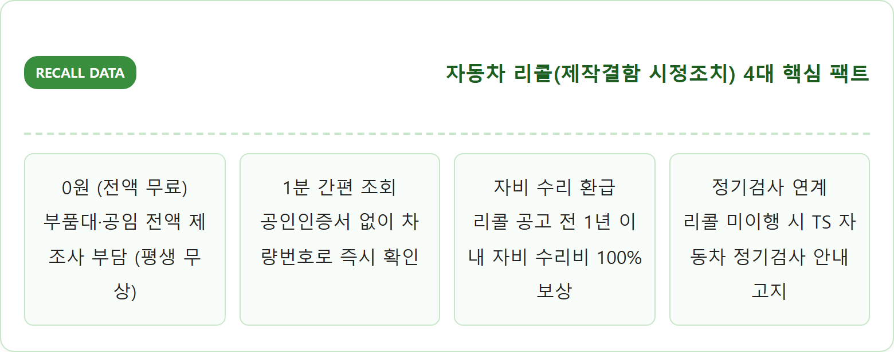
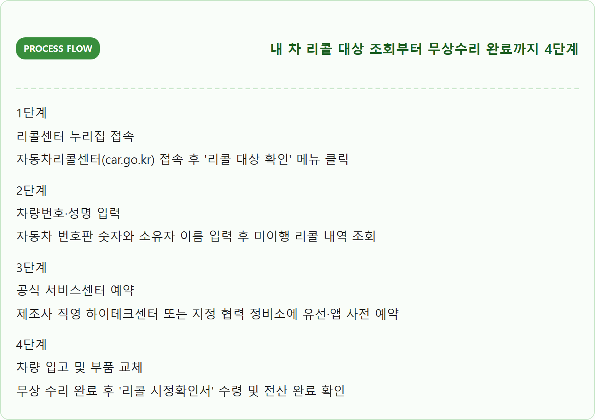
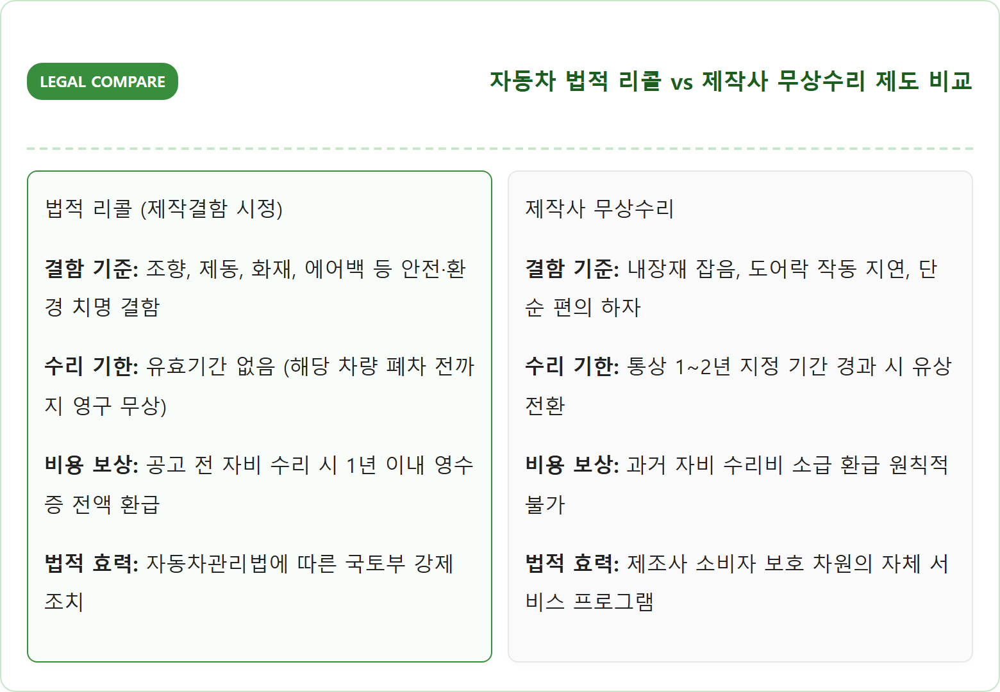
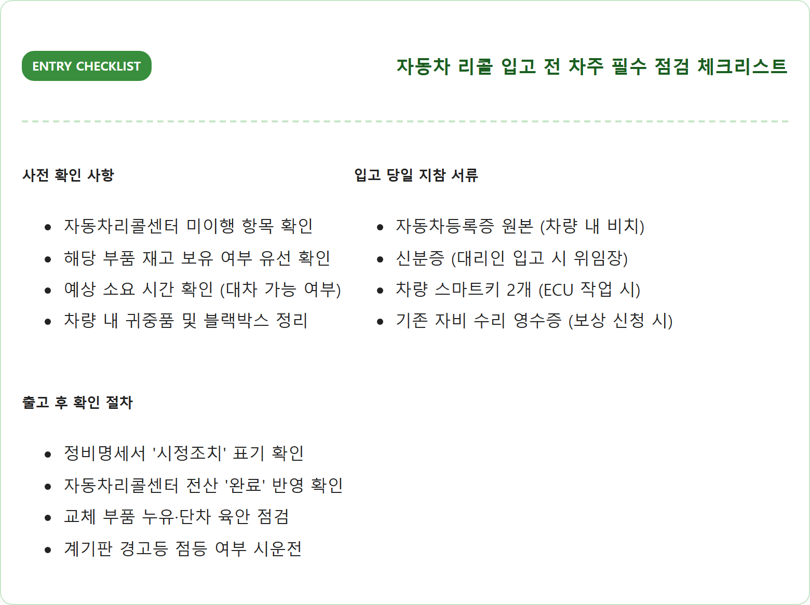
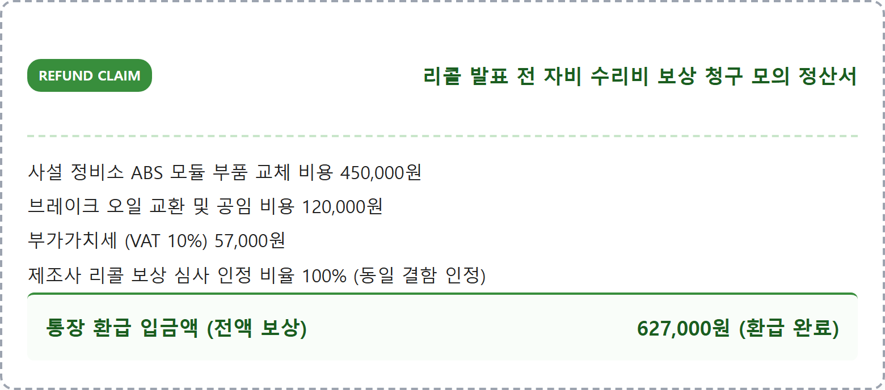
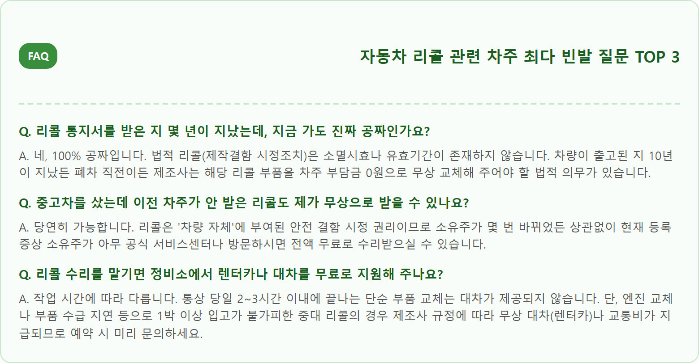

주행 안전과 직결된 결함을 무상으로 수리해 주는 자동차 '리콜(제작결함 시정조치)'은 차량번호 하나만 입력하면 한국교통안전공단 자동차리콜센터 누리집에서 1분 만에 대상 여부와 미조치 내역을 즉시 조회할 수 있습니다.
많은 운전자가 주소 이전이나 우편물 분실로 인해 리콜 통지서를 제때 받지 못해 에어백 오작동, 브레이크 밀림, 엔진 화재 위험 등 치명적인 결함을 안은 채 도로를 달리고 있습니다. 특히 중고차를 구매할 때 이전 차주가 리콜을 받지 않고 방치했는지 여부를 사전에 조회하는 것은 나와 가족의 생명을 지키는 필수 절차입니다. 차량번호 조회 절차부터 공식 서비스센터 예약 요령, 그리고 리콜 발표 전 자비로 수리한 비용을 전액 환급받는 청구 방법까지 실전 정보를 총정리해 드립니다.
📷 AI 대표 메인 썸네일 생성 영역images/261025/7_car_vehicle_recall_status_lookup_guide_1.png
A crisp, professional, high-detail eye-level photograph of a certified automobile service center technician in a clean branded uniform inspecting a modern passenger car raised on a hydraulic lift. The technician holds a digital diagnostic tablet displaying vehicle diagnostic data. In the background, an orderly, brightly lit dealership service bay with professional automotive maintenance equipment. Clean natural workshop lighting, authentic modern automotive industry ambiance, ultra-high resolution, realistic mechanical textures of shiny alloy wheels and clean brake components, 8k resolution, 1:1 aspect ratio.
공식 서비스센터에서 리콜 무상점검 진단을 받는 승용차와 전문 정비 시스템 / AI 제작 이미지
01 | 리콜과 무상수리의 차이 — 안전 결함 강제 시정과 일반 편의 결함 보상의 기준
운전자들이 정비소에서 흔히 접하는 '리콜'과 '무상수리'는 언뜻 비슷해 보이지만, 법적 구속력과 위험도 측면에서 완전히 다른 제도입니다.
**리콜(Recall, 제작결함 시정조치)**은 자동차가 안전기준에 적합하지 않거나 조향, 제동, 연료 누유, 에어백, 배터리 화재 등 운전자의 생명과 직결되는 '안전 및 환경 결함'이 발견되었을 때 국토교통부의 명령 또는 제작사의 자발적 신고에 의해 진행되는 법적 강제 조치입니다. 기한에 제한 없이 제조사가 끝까지 100% 무상으로 부품을 교체해 주어야 합니다.
반면 **무상수리(Free Repair)**는 안전과 직접적인 관련은 없으나 오디오 잡음, 도어 잠금 불량, 실내 내장재 소음 등 소비자의 편의성과 관련된 하자나 품질 문제를 제조사가 서비스 차원에서 자발적으로 고쳐주는 것입니다. 무상수리는 통상 1~2년 등 유효기간이 정해져 있어 기한이 지나면 유상으로 전환되므로, 안내를 받았다면 기한 내에 신속히 입고해야 합니다.

자동차 리콜 제도 4대 핵심 지표 / 인포그래픽 카드
02 | 자동차리콜센터(car.go.kr) 차량번호 조회 3분 완성 절차
내 차가 현재 리콜 대상인지, 혹은 과거에 리콜을 받았는지 확인하는 가장 확실하고 신속한 방법은 한국교통안전공단이 운영하는 '자동차리콜센터'를 이용하는 것입니다.
과거에는 복잡한 17자리 '차대번호(VIN)'를 일일이 등록증에서 찾아 입력해야 했지만, 현재는 공인인증서 로그인 없이 **자동차 등록번호(예: 12가 3456)**와 소유자 성명만 입력하면 즉시 전산 조회가 가능합니다.
조회 결과 화면에는 해당 차종의 결함 장치(예: ABS 브레이크 모듈, 에어백 인플레이터 등), 결함 발생 원인, 시정조치 기간, 공식 무상수리 방법, 그리고 차주가 조치를 완료했는지 여부가 '시정 완료' 또는 '미시정'으로 명확하게 표시됩니다.

리콜 조회부터 수리 완료 4단계 / 인포그래픽 카드
03 | 한국교통안전공단(TS) 자동차365 앱을 통한 모바일 간편 조회 방법
스마트폰을 이용해 이동 중이거나 중고차 매매 단지 현장에서 실시간으로 리콜 여부를 확인하고 싶다면 국토교통부와 한국교통안전공단이 공동 개발한 '자동차365(car365.go.kr)' 모바일 앱을 추천합니다.
자동차365 앱의 '중고차 매매 차량 조회' 메뉴를 활용하면 차량번호 하나로 리콜 대상 여부는 물론이고, 과거 정기검사 이력, 침수차 여부, 보험사 전손·분난 사고 이력, 주행거리 조작 여부까지 한 화면에서 종합적으로 검증할 수 있습니다.
특히 간편 본인인증을 등록해 두면 내 차에 새로운 리콜이나 무상수리가 발표될 때마다 카카오톡 알림톡이나 푸시 알림으로 실시간 공지를 받아볼 수 있어 우편물 누락 걱정을 원천 해소할 수 있습니다.

법적 리콜 vs 무상수리 제도 비교표 / 인포그래픽 카드
04 | 중고차 구매 전 리콜 이행 여부 확인 필수성 — 성능상태점검기록부 대조법
중고차를 구매할 때 카히스토리 사고 이력만큼 중요하게 확인해야 하는 것이 바로 '리콜 시정조치 미이행 여부'입니다.
중고차 딜러가 제시하는 '중고자동차 성능·상태점검기록부' 1페이지 하단에는 반드시 '리콜 대상 및 시정조치 여부' 항목이 인쇄되어 있어야 합니다. 이 항목이 공란이거나 '미시정'으로 체크되어 있다면 구매 계약 전에 딜러에게 리콜 수리를 완료한 후 출고해 줄 것을 특약에 명시해야 합니다.
만약 리콜 미시정 상태로 차량을 인도받게 되면, 추후 구매자가 직접 부품 예약 후 평일에 서비스센터를 방문해 장시간 대기해야 하는 번거로움이 발생할 뿐만 아니라, 이전 차주의 방치로 인한 안전사고 위험을 고스란히 떠안게 됩니다.
05 | 리콜 통지서 우편을 분실했을 때 대처법 — 제조사 고객센터 및 직영 서비스센터 확인
자동차관리법상 제조사는 리콜 대상 차량 소유주에게 자동차등록원부상 주소지로 등기 또는 일반 우편을 통해 안내문을 발송하도록 규정되어 있습니다.
그러나 이사를 가고 주소 이전을 제때 하지 않았거나, 우편함 확인을 소홀히 해 통지서를 분실했더라도 전혀 걱정하실 필요가 없습니다. 리콜은 우편 통지서 종이를 지참하지 않아도 전산 시스템상으로 대상 여부가 100% 조회되기 때문입니다.
현대자동차(블루핸즈/하이테크센터), 기아(오토큐), 르노코리아, KG모빌리티(쌍용), 쉐보레 등 해당 차량 브랜드의 고객센터 대표번호로 전화를 걸어 차량번호만 불러주면 즉시 전산 조회가 가능하며 가까운 지정 정비소로 입고 예약을 도와줍니다.
제조사명
고객센터 대표번호
공식 예약 앱 / 누리집
정비 네트워크
현대자동차
080-600-6000
마이현대(myHyundai) 앱
직영 하이테크센터 & 블루핸즈
기아 (KIA)
080-200-2000
기아 빅(Kia VIK) 앱
직영 서비스센터 & Auto Q
르노코리아
080-300-3000
MY 르노코리아 앱
엔젤센터 & 지정 협력점
KG모빌리티
080-500-5582
KG 모빌리티 공식 누리집
광역 서비스센터 & 지정정비공장
한국GM (쉐보레)
080-3000-5000
쉐보레 공식 홈페이지
직영 서비스센터 & 바로서비스
06 | 리콜 수리 예약 방법과 소요 시간 — 직영 서비스센터 vs 지정 협력점 예약 팁
리콜 예약 시 많은 운전자가 무조건 대형 '직영 서비스센터(하이테크센터)'만 고집하다가 2~3달 뒤에나 예약이 잡히는 불편을 겪곤 합니다.
간단한 ECU(전자제어장치) 소프트웨어 무선 업데이트나 단순 센서·휴즈 교체 등 경정비에 해당하는 리콜은 동네 가까운 지정 협력점(블루핸즈, 오토큐 등)에서도 당일 30분~1시간 만에 신속하게 수리를 마칠 수 있습니다.
반면, 엔진 어셈블리 교체, 고전압 배터리 팩 교체, 변속기 탈부착 등 대작업이 수반되는 중대 리콜은 리프트 설비와 전문 장비를 갖춘 대형 직영 하이테크센터로 입고해야 안전합니다. 따라서 고객센터 상담 시 작업 난이도를 확인하고 경작업은 협력 정비소를 우선 공략하세요.

리콜 입고 전 차주 점검 체크리스트 / 인포그래픽 카드
07 | 이미 자비로 수리한 경우 비용 보상 청구 절차 — 영수증과 결함 확인서 제출 요령
자동차관리법 제31조의2에 따라, 제조사가 결함을 인정하고 **리콜을 공식 발표하기 전 1년 이내에 차주가 동일한 결함으로 자비를 들여 사설 정비소나 센터에서 수리한 경우**, 제조사는 그 수리비 전액을 차주에게 현금으로 보상해야 할 법적 의무가 있습니다.
보상을 청구하려면 세 가지 필수 서류가 필요합니다: ① 정비업체에서 발행한 **자동차 점검·정비명세서(수리 부품과 공임이 명시된 공식 서식)**, ② 카드 결제 영수증 또는 세금계산서, ③ 본인 명의 통장 사본입니다.
제조사 공식 직영 서비스센터 고객상담실(보상담당팀)에 구비 서류를 제출하면 심사를 거쳐 통상 14~30일 이내에 차주가 결제했던 부품대와 공임 일체가 지정된 은행 계좌로 전액 입금됩니다.

리콜 자비 수리비 환급 모의 정산서 / 인포그래픽 카드
08 | 리콜을 안 받고 방치했을 때의 불이익 — 정기검사 통과 여부와 안전사고 책임
'당장 운전하는 데 지장이 없다'는 이유로 리콜 수리를 미루고 방치하면 심각한 안전 위험뿐만 아니라 법적·행정적 불이익이 뒤따릅니다.
첫째, 한국교통안전공단 자동차 정기(종합)검사 시 미이행 리콜 항목이 검사관 단말기에 즉각 표출되며, 검사 적합 판정을 받더라도 **'리콜 미이행 시정권고'** 처분을 받게 됩니다. 특히 배출가스 관련 환경 리콜의 경우 검사 불합격 판정의 사유가 될 수 있습니다.
둘째, 리콜 통지를 받았음에도 불구하고 장기간 방치하다가 해당 결함으로 인해 주행 중 화재나 추돌 사고가 발생했을 경우, 보험사 및 법원 판례에서 차주의 '관리상 과실'이 참작되어 보험금 지급이 삭감되거나 배상 책임 비율이 높아질 수 있습니다.
09 | 리콜 시정조치 완료 확인서 발급 및 내 차 이력 갱신 확인법
서비스센터에서 리콜 무상수리를 마쳤다면 반드시 현장에서 정비사로부터 **'자동차 제작결함 시정조치 완료 확인서'** 또는 정비명세서를 발급받아 보관해야 합니다.
수리 완료 후 약 3~5일(영업일 기준)이 지나면 제조사 전산망에서 국토교통부 자동차관리정보시스템(VMIS)으로 완료 데이터가 자동 전송됩니다.
이후 다시 자동차리콜센터 누리집이나 자동차365 앱에 접속해 내 차량번호를 조회했을 때 상태 표시가 '미시정'에서 **'시정 완료'**로 정상 변경되었는지 최종적으로 확인하는 것이 안전한 차량 관리의 마침표입니다.
10 | 자동차 리콜 조회 및 무상수리 필수 체크리스트와 FAQ
자동차 리콜과 관련해 차주들이 가장 많이 헷갈려하는 3대 빈발 질문을 일문일답으로 명쾌하게 정리했습니다.

자동차 리콜 자주 묻는 질문 FAQ / 인포그래픽 카드
💡 리콜 입고 전 무상 기본점검 요청 팁
리콜 부품 교체를 위해 서비스센터에 예약 입고할 때, 제조사에서 연 1회 제공하는 '무상 정기점검(엔진오일 누유, 타이어 공기압, 배터리 전압, 부동액 체크)'을 함께 신청하세요.
리콜 작업과 동시에 차량 전체의 컨디션을 공짜로 점검받을 수 있어 정비 시간을 2배로 알차게 활용할 수 있습니다.